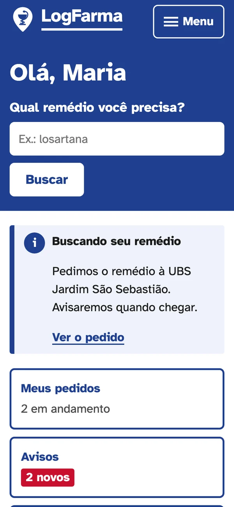
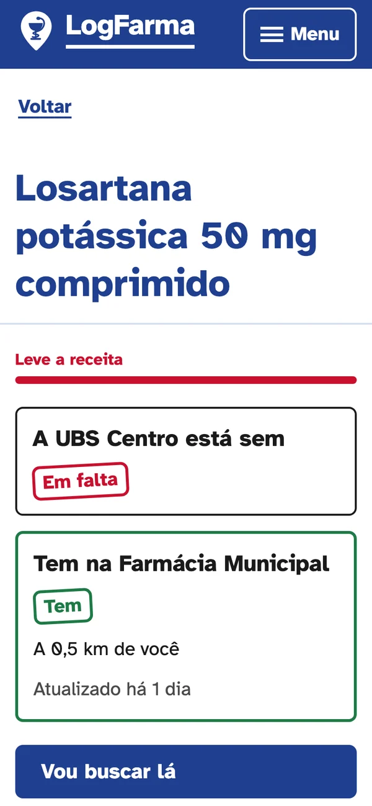
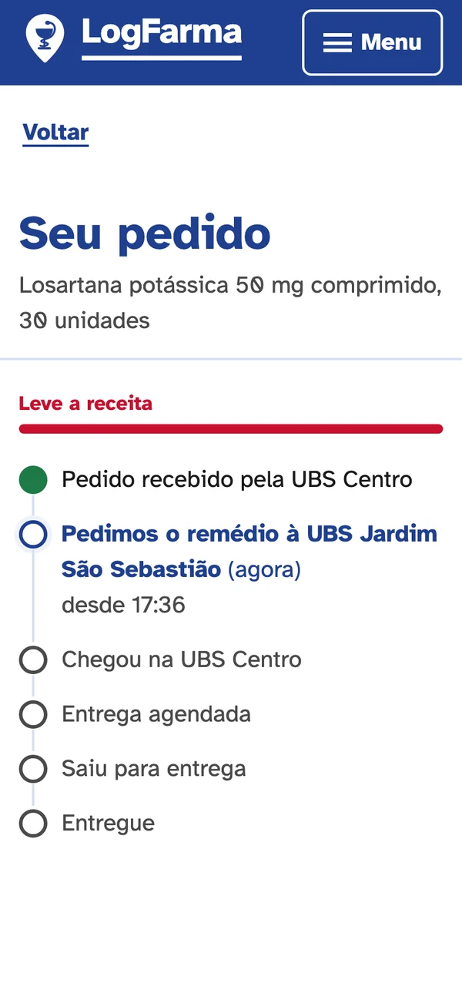
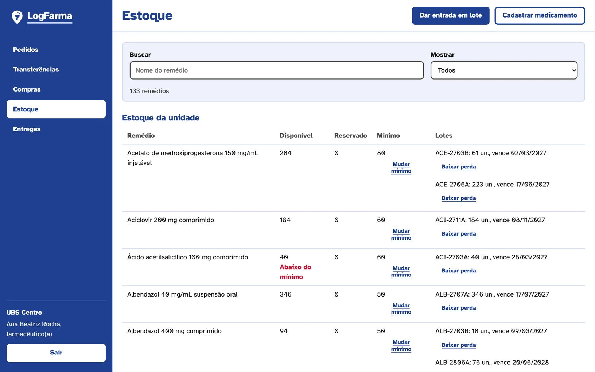
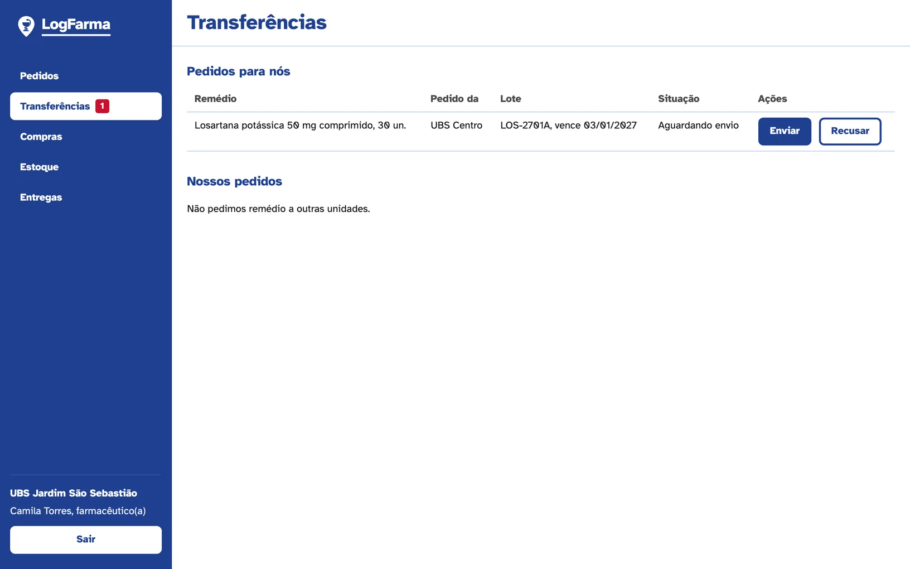
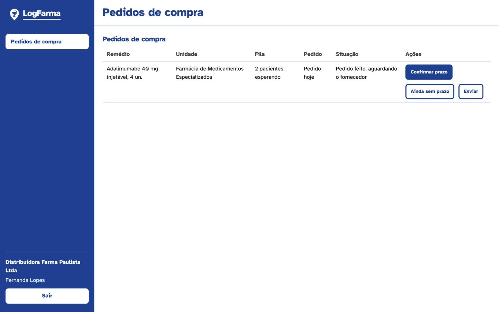
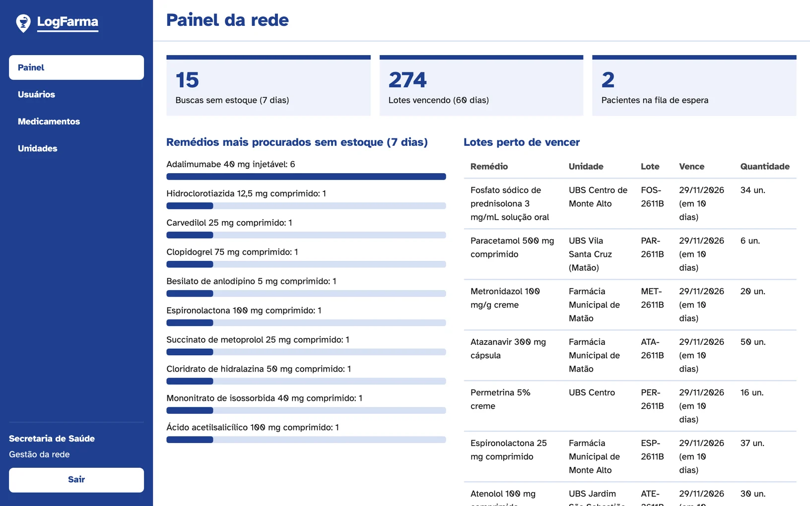
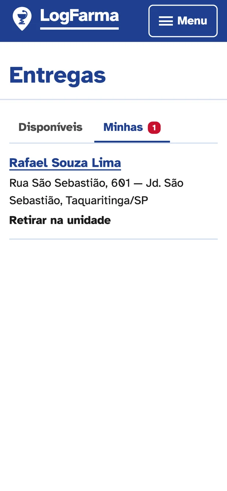

LogFarma
Localização, reposição e entrega de medicamentos na rede pública de saúde
Arthur Vinicius Ferreira · Bruno Henrique Jacinto · Lorena Duarte Malaguti · Paulo Henrique de Souza Santos
Projeto Integrador I · ADS
Fatec Taquaritinga · 2026
CONHEÇA A DONA MARIA
Ela mora no Centro de Taquaritinga, anda com dificuldade e depende do remédio todo dia.
HOJE
1. Pega ônibus até a UBS Centro
2. No balcão: “a losartana está em falta”
3. Não sabe onde tem, volta para casa
4. Fica dias sem tomar o remédio
COM O LOGFARMA
1. Procura no celular, com a filha
2. Vê onde tem, perto de casa
3. A UBS dela pede a transferência
4. O remédio chega em casa
LogFarma · PI Fatec Taquaritinga 2026
O PROBLEMA
82%
dos 3.360 municípios pesquisados relataram falta de medicamentos
Confederação Nacional de Municípios (CNM), 2022
Faltam mais antibióticos, remédios de pressão e de diabetes. Quase metade dos gestores disse que a falta dura de 30 a 90 dias.
Sem saber onde tem, muita gente interrompe o tratamento.
LogFarma · PI Fatec Taquaritinga 2026
PARA QUEM
Pessoas idosas, de baixa renda ou com pouca mobilidade. O que não fazer aprendemos com o app Aqui Tem Remédio: nota 1,3 de 5 na App Store e sem atualização desde 2022.
Letra que se lê
Fonte Atkinson Hyperlegible, criada para pessoas com baixa visão, em tamanho grande.
Alto contraste
Cores com contraste alto e texto simples, sem termos técnicos para o paciente.
Poucos passos
Um assunto por tela, menu lateral em toda área logada e a próxima ação sempre à vista.
LogFarma · PI Fatec Taquaritinga 2026
A SOLUÇÃO
RF01 · RF02 · RF03
Onde tem
Estoque de toda a rede em tempo real e a unidade mais próxima, com rota.
RF07
Transferência
Uma unidade pede o remédio à outra, mais perto do paciente.
RF08
Entrega em casa
Para quem não pode ir, pelo programa municipal de entrega.
RF04 · RF05 · RF06
Lista de espera
Pedido ao fornecedor e aviso automático, com prioridade clínica.
Fora do escopo: não vende remédio, não substitui a receita nem a avaliação clínica, não cobre farmácia privada fora do Farmácia Popular e não resolve a causa do desabastecimento.
LogFarma · PI Fatec Taquaritinga 2026
O QUE JÁ EXISTE
| O que o paciente precisa | Aqui Tem Remédio (SP, 2015) |
Remédio na Hora (SP, 2026) |
LogFarma |
|---|---|---|---|
| Saber onde tem o remédio | Sim, mas abandonado desde 2022 | Sim | Sim |
| Pedir para outra unidade mandar | Não | Não | Sim, transferência |
| Receber em casa | Não | Não | Sim, entrega |
| Fila com prioridade e aviso quando chegar | Não | Não | Sim, lista de espera |
Os dois são da Prefeitura de São Paulo e atendem só a capital. O LogFarma foi pensado para qualquer município.
LogFarma · PI Fatec Taquaritinga 2026
QUEM USA
| Perfil | O que faz | Telas |
|---|---|---|
| Paciente | Procura o remédio, faz o pedido, escolhe retirar ou receber em casa | Procurar, Onde tem, Meus pedidos, Avisos |
| Farmácia (farmacêutico ou auxiliar) | Atende no balcão, confere receita, cuida do estoque, pede transferência e compra | Pedidos, Estoque, Transferências, Compras, Entregas |
| Fornecedor | Confirma o prazo ou envia o lote de um pedido de compra | Pedidos de compra |
| Entregador | Aceita, retira e entrega o remédio em casa | Entregas |
| Gestor | Acompanha a demanda e cadastra unidades, remédios e usuários | Painel, Unidades, Medicamentos, Usuários |
LogFarma · PI Fatec Taquaritinga 2026
FLUXO PRINCIPAL
1. Paciente busca
2. Tem na unidade?
3. Tem na rede?
4. Pede ao fornecedor
5. Remédio chegou
não
não
Em paralelo: abaixo do mínimo, a unidade repõe sozinha
Sim: separa e entrega no balcão
Sim: rota até a mais próxima ou transferência
Com prazo: avisa o paciente. Sem prazo: lista de espera
Pode ir: retira. Não pode: entrega em casa
LogFarma · PI Fatec Taquaritinga 2026
REQUISITOS
| Código | Requisito | Como aparece no sistema |
|---|---|---|
| RF01 | Consultar estoque local | Paciente procura o remédio; farmácia vê o estoque por lote |
| RF02 | Disponibilidade na rede | “Onde tem”: todas as unidades com tem, pouco ou em falta |
| RF03 | Unidade mais próxima e rota | Distância pela localização e botão de rota no mapa |
| RF04 | Pedido de compra | Pedido ao fornecedor no balcão ou automático pelo mínimo |
| RF05 | Notificar o paciente | Aviso a cada mudança do pedido: prazo, chegada, entrega |
| RF06 | Lista de espera | Fila com prioridade clínica e por idade, com alerta |
| RF07 | Transferência entre unidades | Pedir, enviar ou recusar, e receber na unidade |
| RF08 | Entrega em casa | Agendar e acompanhar: aceitou, saiu, entregou |
LogFarma · PI Fatec Taquaritinga 2026
AS TELAS · PACIENTE

Início: a busca em destaque e o que está andando

Onde tem: em falta aqui, tem a 0,5 km

Seu pedido: cada etapa, sem precisar ligar
LogFarma · PI Fatec Taquaritinga 2026
AS TELAS · FARMÁCIA

Estoque: disponível, reservado, mínimo e cada lote com validade

Transferências: a UBS Jardim envia ou recusa o pedido do Centro
LogFarma · PI Fatec Taquaritinga 2026
AS TELAS · FORNECEDOR, GESTOR E ENTREGADOR

Fornecedor: confirma prazo ou envia o lote

Gestor: onde falta, o que vence e quem espera

Entregador: as entregas dele
LogFarma · PI Fatec Taquaritinga 2026
ARQUITETURA
Navegador
Paciente no celular, equipe no computador
Frontend
React 19, Vite e TypeScript, servido por nginx
Backend (API)
Node, Fastify 5 e TypeScript; 55 rotas em /api
Banco
PostgreSQL com Drizzle ORM; migrações ao iniciar
Design system
Tokens, 23 componentes e Storybook, usados pelo frontend
Infraestrutura
GitHub Actions gera as imagens Docker; o deploy sobe na VPS do grupo com HTTPS (Caddy). Banco com backup por script.
Monorepo pnpm com um lockfile só. O frontend chama a API por HTTPS (JSON); a API fala SQL com o banco.
LogFarma · PI Fatec Taquaritinga 2026
BANCO DE DADOS
Nomes em inglês, seguindo o glossário do projeto; quatro migrações versionadas.
Pessoas e acesso
8 tabelas
users
patients
patient_priorities
caregivers
pharmacy_staff
supplier_staff
couriers
password_reset_tokens
Rede
2 tabelas
pharmacies
suppliers
Rastros anônimos
2 tabelas
search_events
patient_recent_medications
Remédio e estoque
5 tabelas
medications
stock_items
stock_batches
stock_movements
stock_reservations
Atendimento
8 tabelas
medication_requests
prescriptions
dispensations
transfers
deliveries
waitlist_entries
purchase_orders
notifications
LogFarma · PI Fatec Taquaritinga 2026
BANCO · PESSOAS
users
e-mail, senha (argon2), perfil, ativo
patients
CNS, endereço, unidade de referência
pharmacy_staff
farmacêutico ou auxiliar, CRF
supplier_staff
atendente do fornecedor
couriers
programa municipal de entrega
pharmacies
unidades da rede
suppliers
distribuidoras
patient_priorities
crônico, oncológico ou doença rara, com consentimento
caregivers
quem retira por ele
A seta aponta para a tabela referenciada (chave estrangeira). Cada perfil liga 1:1 a users pelo user_id.
LogFarma · PI Fatec Taquaritinga 2026
BANCO · ESTOQUE
Disponível = soma dos lotes dentro da validade − o que já está separado para pedidos.
pharmacies
a unidade
stock_items
mínimo por unidade
medications
o remédio
stock_batches
lote, validade, quantidade
stock_movements
entrada, saída, perda, ajuste
stock_reservations
separado para um pedido
FEFO: vence antes, sai antes
Lote vencido não é dispensado
Abaixo do mínimo: reposição automática
LogFarma · PI Fatec Taquaritinga 2026
BANCO · ATENDIMENTO
patients
quem pediu
prescriptions
receita conferida
medications
qual remédio
pharmacies
unidade responsável
medication_requests
situação, retirada ou entrega
notifications
avisos ao paciente
purchase_orders
compra ao fornecedor
dispensations
retirada no balcão
transfers
entre unidades
deliveries
entrega em casa
waitlist_entries
fila por prioridade
LogFarma · PI Fatec Taquaritinga 2026
SITUAÇÕES DO PEDIDO
Aguardando a farmácia
Em transferência
Na lista de espera
Chegou na unidade
Pronto para retirada
Entrega agendada
Retirado (fim)
Entregue (fim)
Saiu para entrega
Transferência recusada volta para “aguardando”; entrega que falha volta para “chegou”. Antes de concluir, o pedido pode ser cancelado. Toda mudança passa por uma única função, que barra saltos inválidos.
LogFarma · PI Fatec Taquaritinga 2026
REGRAS DE NEGÓCIO
Prioridade na fila
Oncológico ou doença rara primeiro, depois crônico, 80+ e 60+ anos. Empate: quem chegou antes.
Lote certo
Sai primeiro o lote que vence antes (FEFO). Lote vencido nunca é dispensado.
Receita
Conferida e válida antes de entregar. Antibiótico e controlado: só o farmacêutico.
Estoque mínimo
Abaixo do mínimo, a unidade pede reposição sem travar o atendimento.
Unidade certa
Alto custo vai para a Farmácia de Especializados; o resto, para a UBS de referência.
Rede pública
Transferência só entre unidades do SUS; o Farmácia Popular aparece só para consulta.
LogFarma · PI Fatec Taquaritinga 2026
SEGURANÇA E LGPD · RNF03
Senhas
Guardadas com argon2, nunca em texto. Recuperação por link de uso único, válido 30 min.
Sessão
Token JWT em cookie httpOnly, ou no cabeçalho Bearer para o site do professor.
Perfis no servidor
Farmácia só na própria unidade; fornecedor e entregador só no que é deles.
Dado sensível
Prioridade clínica só com consentimento, que pode ser revogado. Nada pessoal nos logs.
Painel anônimo
As buscas que o gestor vê não guardam quem buscou.
Lista de sites
Só nossos sites chamam a API pelo navegador. Isso protege o usuário de sites maliciosos, não substitui o login.
LogFarma · PI Fatec Taquaritinga 2026
QUALIDADE
323
testes automáticos (144 da API, com banco real, e 179 das telas)
296
medicamentos da RENAME no catálogo
18
unidades em Taquaritinga, Matão e Monte Alto
18
registros no diário de bordo, em docs/
Como trabalhamos: TypeScript estrito, formatação automática (Prettier), main protegida, verificação de tipos antes de cada entrega e tudo documentado em docs/: o que, por que, onde e as escolhas feitas.
LogFarma · PI Fatec Taquaritinga 2026
DEMONSTRAÇÃO AO VIVO · LOGFARMA.CODEXOLIMPO.COM.BR
| # | Conta (@demo.logfarma) | O que mostrar |
|---|---|---|
| 1 | maria | Procura losartana: em falta na UBS Centro, tem perto dela. Vê os pedidos e avisos |
| 2 | farmaceutico.jardim | Transferências: envia a losartana pedida pelo Centro |
| 3 | farmaceutico.centro | Recebe a losartana e agenda a entrega; entrega a metformina no balcão |
| 4 | entregador1 | Aceita, retira e entrega a dipirona do Rafael |
| 5 | fornecedor | Confirma o prazo do adalimumabe: a lista de espera recebe o aviso |
| 6 | gestor | Painel: buscas não atendidas, unidades, remédios e usuários |
LogFarma · PI Fatec Taquaritinga 2026
E A DONA MARIA?
Sem ônibus, sem fila, sem voltar de mãos vazias.
Procurou no celular
A UBS pediu à outra unidade
O remédio chegou na UBS
O entregador saiu
Entregue em casa
LogFarma · PI Fatec Taquaritinga 2026
PRÓXIMOS PASSOS
INTEGRAÇÃO
Estoque oficial
Ler o estoque direto do BNAFAR/Hórus, em vez de cadastrar à mão. O banco já guarda os campos.
INTEGRAÇÃO
Mapas e logística
Rota e tempo reais por um serviço de mapas e roteiro de entregas para o programa municipal.
NOVOS MÓDULOS
Adesão e voluntários
Lembrete de tratamento e programa de entrega voluntária, previstos para depois do MVP.
Escala (RNF04): uma nova cidade é só cadastrar unidades. O catálogo já cobre Taquaritinga, Matão e Monte Alto.
LogFarma · PI Fatec Taquaritinga 2026
REFERÊNCIAS
CNM, 2022. Desabastecimento de remédios afeta mais de 3,3 mil municípios. Confederação Nacional de Municípios.
Ministério da Saúde. RENAME: Relação Nacional de Medicamentos Essenciais.
Brasil. Lei 13.709/2018. Lei Geral de Proteção de Dados Pessoais (LGPD).
Brasil. Lei 10.741/2003. Estatuto da Pessoa Idosa (prioridade por idade).
Anvisa. RDC 471/2021. Receita de antimicrobianos.
Ministério da Saúde. Portaria 344/1998. Medicamentos de controle especial.
Ministério da Saúde. Programa Farmácia Popular do Brasil e BNAFAR.
Prefeitura de São Paulo. Aqui Tem Remédio (App Store) e Remédio na Hora (e-saúdeSP).
Braille Institute. Fonte Atkinson Hyperlegible.
LogFarma · PI Fatec Taquaritinga 2026
Aponte a câmera e conheça o LogFarma.
Arthur Vinicius Ferreira · Bruno Henrique Jacinto · Lorena Duarte Malaguti ·
Paulo Henrique de Souza Santos
Orientador: Prof. Gabriel Passatuto
Gallo · Fatec Taquaritinga · 2026
logfarma.codexolimpo.com.br
← → passar · F tela cheia · N notas · P automático